Rujukan digital 9 kitab hadis (Kutub al-Tis'ah) dalam Bahasa Melayu — dibina untuk pelajar, pengkaji, peminat hadis dan pengguna awam. Teks Arab penuh, terjemahan Melayu · Indonesia · Inggeris, transliterasi, darjat ulama, huraian ringkas dan carian makna AI. Semuanya berfungsi sepenuhnya tanpa internet.
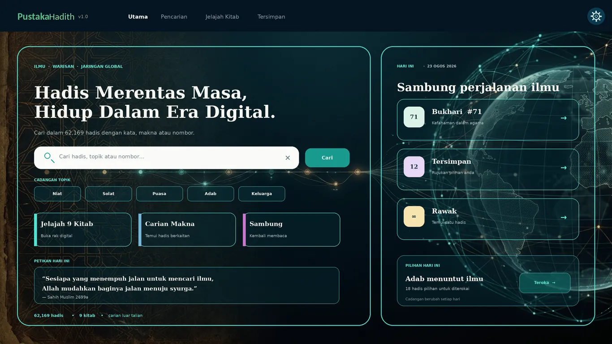
Tema Aqua Glass dengan rak digital interaktif, susunan dwibahasa Arab‑Melayu, dan panel statistik yang bersih.
Split Command Center — carian di tengah, jalan pantas & rak kitab di sisi
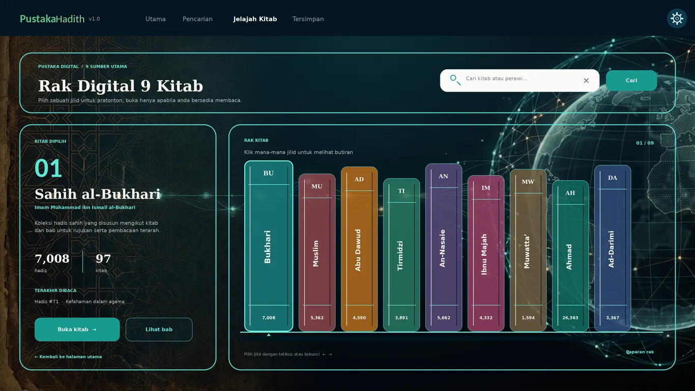
Rak Digital Interaktif — jelajah semua 9 kitab seperti rak buku sebenar
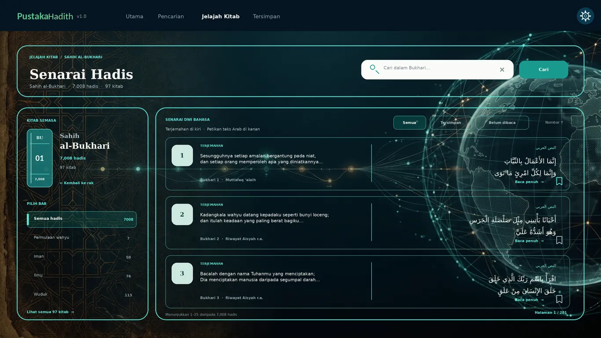
Gaya Dwibahasa — terjemahan kiri, petikan Arab kanan, selari ayat demi ayat
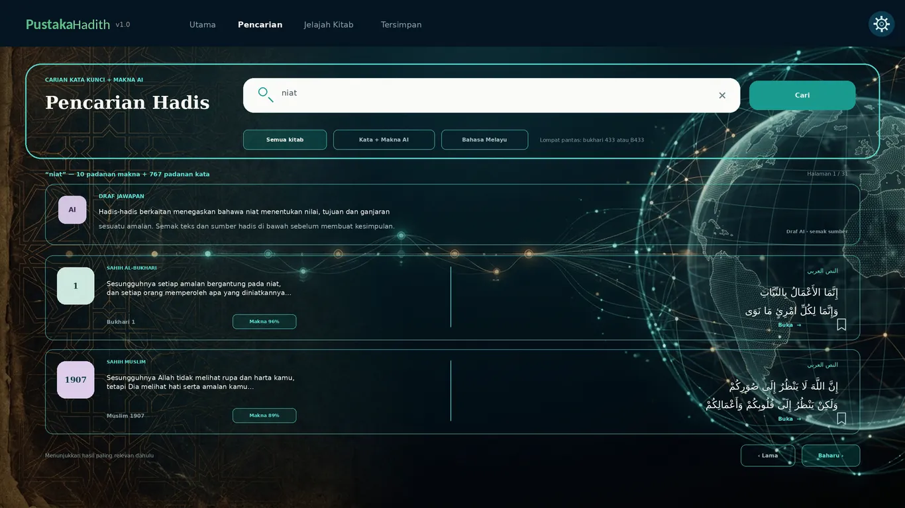
Kata Kunci + Makna AI — dua enjin mencari serentak, jawapan draf di atas
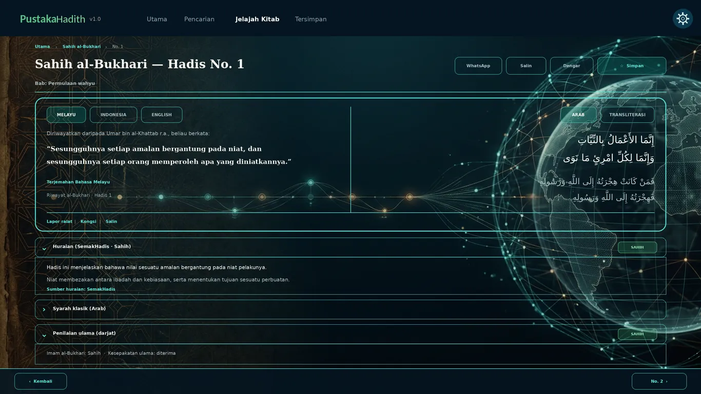
Detail lengkap — Arab · transliterasi · 3 bahasa · darjat · syarah · butang Kongsi/Salin/Lapor
Gabungan carian moden, sumber berautoriti dan susun atur yang selesa untuk pengajian harian dan penyelidikan.
Tanya makna, bukan sekadar perkataan.
Carian kata kunci (FTS5) dan carian semantik AI berjalan serentak — cari ikut maksud, bukan sekadar ejaan. Jawapan draf AI dipaparkan di atas hasil.
e5‑small · FAISSArab, Melayu, Indonesia dan Inggeris. Susunan dua lajur dengan teks terjemahan sentiasa sejajar dengan petikan Arab (RTL). Terjemahan Melayu & Indonesia lengkap 100%; Inggeris 51%.
Inggeris 51% · 2 gaya transliterasi63,930 klasifikasi Sahih/Hasan/Da'if mengikut penilaian ulama hadis moden — dipaparkan sebagaimana adanya, tanpa memilih antara pendapat yang berbeza. Disertai huraian ringkas untuk 4,237 hadis.
Darjat mengikut sumberBukhari, Muslim, Abu Daud, Tirmizi, Nasa'i, Ibnu Majah, Ahmad, Darimi dan Malik — lengkap dengan pembahagian bab untuk navigasi tema.
31,322 babSimpan hadis kegemaran, jejak sejarah bacaan, dan lompat terus ke hadis dengan pintasan Ctrl+G atau taip B433.
B949 sambung bacaRujuk hadis tanpa internet, tanpa wang.
Semua data disimpan secara tempatan dalam SQLite. Tiada akaun, tiada iklan, tiada internet diperlukan selepas pemasangan.
Sumber terbuka dataSeluruh himpunan Kutub al‑Tis'ah — daripada Sahih al‑Bukhari hingga Muwatta' Malik, boleh dijelajah ikut bab.
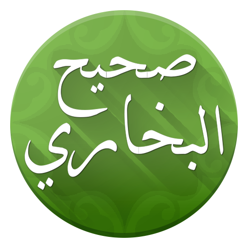
صحيح البخاريSahih BukhariImam al‑Bukhari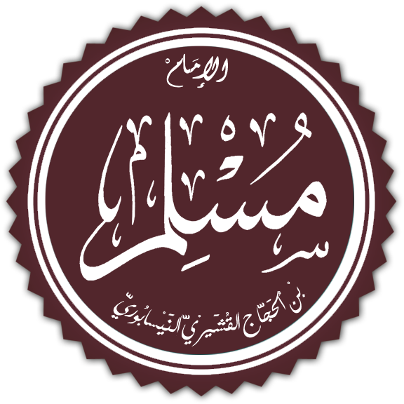
صحيح مسلمSahih MuslimImam Muslim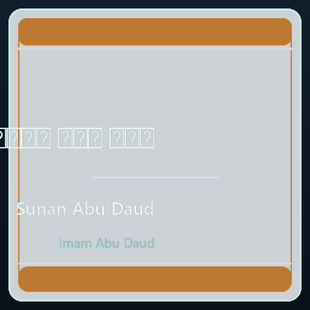
Sunan Abu DaudImam Abu Daud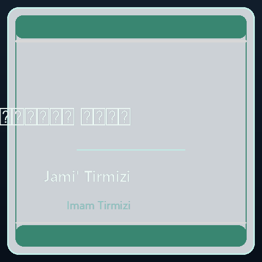
Jami' TirmiziImam Tirmizi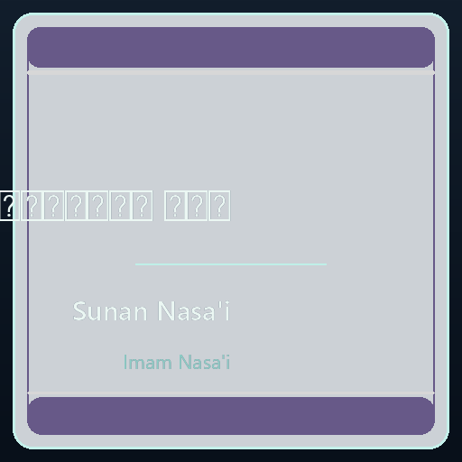
Sunan Nasa'iImam Nasa'i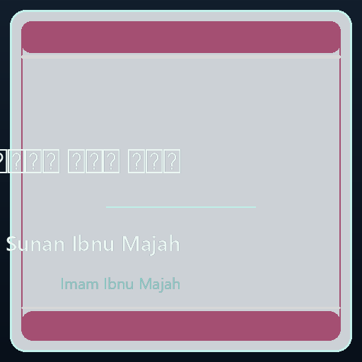
Sunan Ibnu MajahImam Ibnu Majah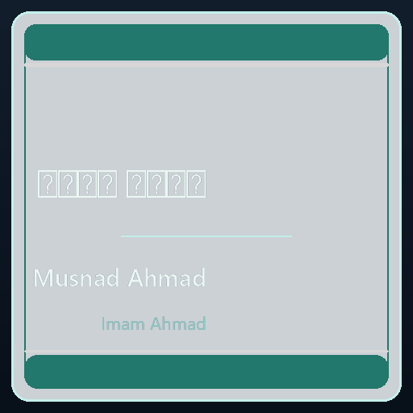
Musnad AhmadImam Ahmad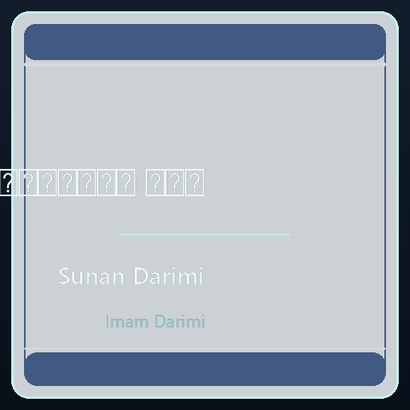
Sunan DarimiImam Darimi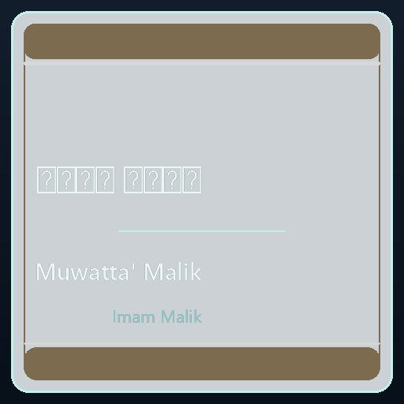
Muwatta' MalikImam MalikUntuk bahan agama, jangkaan yang salah lebih berbahaya daripada ciri yang kurang. Jadi aplikasi ini jelas tentang peranannya.
Aplikasi ini tidak memberi hukum dan tidak menjawab persoalan fiqh. Untuk keputusan agama, rujuk ulama bertauliah.
Teks sahajaTerhad kepada 9 kitab yang disebut. Hadis yang beredar di media sosial mungkin bukan daripada koleksi ini. Untuk semakan khusus, gunakan pangkalan data hadis daif/palsu.
9 kitab sahajaMemahami hadis memerlukan ilmu alat — konteks, sanad dan kaedah usul. Aplikasi menyediakan teks; ulama yang membimbing pemahaman.
Bimbingan pakarDarjat hadis: ulama boleh berbeza pendapat tentang hadis yang sama. Aplikasi memaparkan setiap penilaian sebagaimana adanya, tanpa memilih antara mereka. Carian makna dijana mesin — ia alat carian, bukan tafsiran.
62,169 Hadis. 9 Kitab. Percuma.
Tanpa perlu Python atau persediaan rumit — jalankan terus dari Windows. Data anda dikekalkan semasa naik taraf.
✅ v1.0.1 disahkan & live di Microsoft Store dengan kemas kini automatik. MSIX v1.0.1 (814.8 MB, data hadis penuh).
🛍️ Buka Microsoft StorePemasang Inno Setup berbahasa Melayu. Pilih lokasi pemasangan, buat pintasan desktop, terus guna.
⬇ Muat Turun EXEBuka dengan 7‑Zip ke mana‑mana folder, jalankan PustakaHadith.exe. Tiada pemasangan — padam folder = selesai.
⬇ Muat Turun 7zVersi 1.0.1 · Muat turun 0.8–1.1 GB (data hadis disertakan) · RAM minimum 4 GB · Setelah dimuat turun, semua berfungsi tanpa internet.
Ada pertanyaan, cadangan atau masalah? Kami sedia membantu.